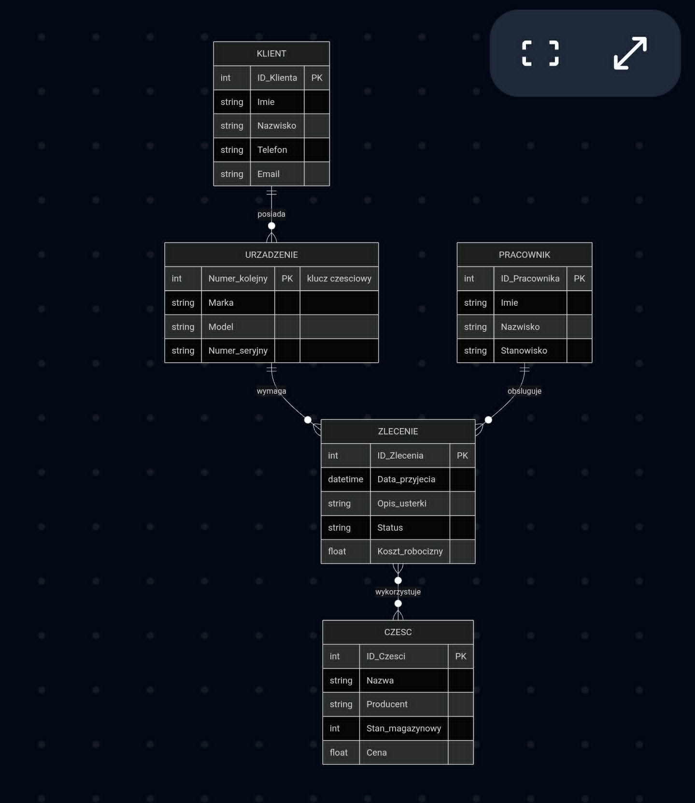
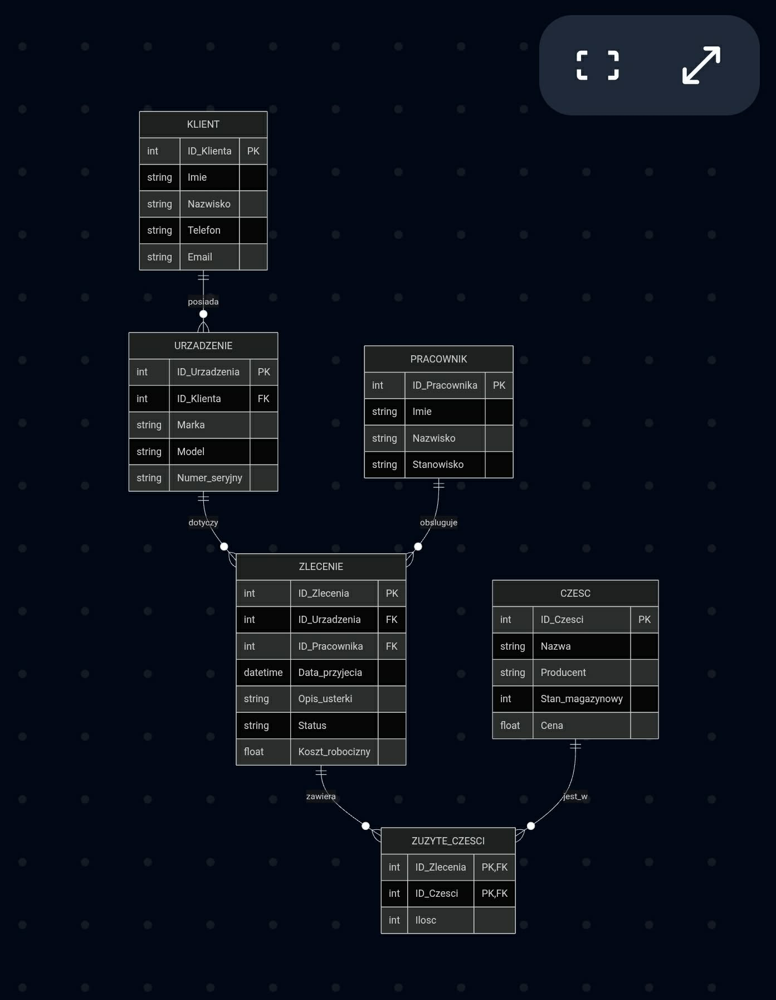

/Author: [Damian Dominiak Michał Bystrzak] / Date: 2026-05-14 / Version: 1.0 /
Rozdział 3. Dokumentacja projektowa bazy danych¶
3.1. Wybór zagadnienia i opis procesów¶
Tematem projektu jest relacyjna baza danych dla systemu zarządzania serwisem sprzętu IT. Aplikacja docelowa ma za zadanie obsługiwać pełen cykl życia zlecenia serwisowego – od momentu przyjęcia sprzętu od klienta, poprzez diagnozę i zużycie części magazynowych, aż po ostateczne rozliczenie i wydanie naprawionego urządzenia.
Główne procesy obsługiwane przez system:
Ewidencja klientów i urządzeń: Rejestracja danych kontaktowych klienta oraz powiązanie z nim konkretnych egzemplarzy sprzętu (identyfikowanych m.in. na podstawie numerów seryjnych).
Zarządzanie zleceniami: Tworzenie nowych zleceń naprawy dla konkretnych urządzeń, przypisywanie do nich techników prowadzących oraz śledzenie statusu prac.
Gospodarka magazynowa części: Rejestrowanie zużycia części wymiennych w ramach konkretnych zleceń, co pozwala na dokładne wyliczenie kosztów końcowych.
3.2. Prototypy danych i analiza typów¶
W celu weryfikacji kompletności gromadzonych informacji przygotowano prototypowe pliki z jednym wierszem danych dla centralnej encji systemu, jaką jest zlecenie serwisowe.
Prototyp w formacie JSON:
{
"id_zlecenia": 1024,
"data_przyjecia": "2024-05-14T12:00:00Z",
"opis_usterki": "Uszkodzona matryca - pionowe pasy na ekranie",
"status": "W trakcie diagnozy",
"koszt_robocizny": 180.50,
"id_klienta": 45,
"id_technika": 12
}
Prototyp w formacie CSV:
id_zlecenia,data_przyjecia,opis_usterki,status,koszt_robocizny,id_klienta,id_technika
1024,2024-05-14T12:00:00Z,Uszkodzona matryca - pionowe pasy na ekranie,W trakcie diagnozy,180.50,45,12
Zestawienie typów danych dla wybranych silników:
Atrybut |
Typ danych (SQLite) |
Typ danych (PostgreSQL) |
|---|---|---|
|
INTEGER PRIMARY KEY |
SERIAL PRIMARY KEY |
|
TEXT |
TIMESTAMP |
|
TEXT |
TEXT |
|
TEXT |
VARCHAR(50) |
|
REAL |
NUMERIC(10, 2) |
|
INTEGER |
INT |
3.3. Model koncepcyjny bazy danych¶
Na etapie modelowania koncepcyjnego zdefiniowano główne wymagania informacyjne systemu. Zidentyfikowano encje, ich atrybuty oraz relacje zachodzące w analizowanym środowisku. Do wizualizacji wybrano notację Crow’s Foot (kurzych łapek) jako współczesny standard branżowy, który zapewnia wyższą czytelność i płynniejsze przejście do modelu logicznego niż tradycyjna notacja Chena.
Zidentyfikowane encje mocne i ich klucze:
KLIENT:
ID_Klienta(PK), Imię, Nazwisko, Telefon, Email.PRACOWNIK:
ID_Pracownika(PK), Imię, Nazwisko, Stanowisko.ZLECENIE:
ID_Zlecenia(PK), Data_przyjecia, Opis_usterki, Status, Koszt_robocizny.CZĘŚĆ:
ID_Czesci(PK), Nazwa, Producent, Stan_magazynowy, Cena.
Zidentyfikowana encja słaba:
URZĄDZENIE: Posiada klucz częściowy
Numer_kolejnyoraz atrybuty Marka, Model, Numer_seryjny. Jest to encja słaba, ponieważ jej egzystencja w systemie jest całkowicie zależna od istnienia powiązanej encji mocnej (KLIENT).
Związki i krotności:
W modelu poprawnie zamodelowano ścieżkę powiązań KLIENT -> URZĄDZENIE -> ZLECENIE. Uniknięto w ten sposób związku niepoprawnego, zwanego pułapką wiatraka (fan trap), który wystąpiłby, gdyby encje URZĄDZENIE oraz ZLECENIE były połączone z encją KLIENT w sposób niezależny.
W modelu zidentyfikowano również związek wiele-do-wielu (M:N) pomiędzy encjami ZLECENIE oraz CZĘŚĆ.

Rys. 1. Diagram koncepcyjny bazy danych serwisu IT.¶
3.4. Model logiczny i normalizacja¶
Model logiczny został opracowany na bazie modelu koncepcyjnego poprzez uszczegółowienie struktury i dostosowanie jej do paradygmatu relacyjnego.
Eliminacja relacji M:N
Występująca w modelu koncepcyjnym relacja wiele-do-wielu między zleceniami a częściami została rozwiązana poprzez wprowadzenie tabeli asocjacyjnej (pośredniczącej) o nazwie ZUZYTE_CZESCI. Tabela ta posiada złożony klucz główny (ID_Zlecenia, ID_Czesci) oraz dodatkowy atrybut niekluczowy Ilosc. Wprowadzono również klucze sztuczne i obce.
Proces normalizacji:
Zaprojektowana struktura została poddana procesowi normalizacji, osiągając 3. postać normalną (3NF), co stanowi optymalny kompromis między wydajnością systemu a eliminacją redundancji danych.
1NF: Tabela spełnia pierwszą postać normalną, ponieważ wszystkie atrybuty są atomowe, a dane nadmiarowe (np. wiele użytych części w jednym zleceniu) zostały przeniesione do nowej tabeli.
2NF: Warunek drugiej postaci normalnej jest spełniony. Każdy atrybut niekluczowy jest w pełni funkcyjnie zależny od całego klucza głównego (istotne zwłaszcza w tabeli
ZUZYTE_CZESCI, gdzie wartośćIlosczależy wprost od pary zlecenie-część).3NF: Model osiąga trzecią postać normalną, gdyż nie występują w nim żadne zależności przechodnie (tranzytywne) między atrybutami niekluczowymi.

Rys. 2. Diagram logiczny bazy danych serwisu IT w 3NF.¶
3.5. Model fizyczny¶
Na podstawie schematu logicznego przygotowano fizyczną implementację struktury danych z uwzględnieniem specyfiki dwóch różnych systemów zarządzania relacyjnymi bazami danych: SQLite oraz PostgreSQL.
3.5.1. Implementacja w środowisku SQLite¶
Model wykorzystuje proste typowanie dostępne w silniku SQLite.
CREATE TABLE KLIENT (
ID_Klienta INTEGER PRIMARY KEY,
Imie TEXT NOT NULL,
Nazwisko TEXT NOT NULL,
Telefon TEXT,
Email TEXT
);
CREATE TABLE URZADZENIE (
ID_Urzadzenia INTEGER PRIMARY KEY,
ID_Klienta INTEGER NOT NULL,
Marka TEXT NOT NULL,
Model TEXT NOT NULL,
Numer_seryjny TEXT,
FOREIGN KEY (ID_Klienta) REFERENCES KLIENT(ID_Klienta)
);
CREATE TABLE PRACOWNIK (
ID_Pracownika INTEGER PRIMARY KEY,
Imie TEXT NOT NULL,
Nazwisko TEXT NOT NULL,
Stanowisko TEXT NOT NULL
);
CREATE TABLE ZLECENIE (
ID_Zlecenia INTEGER PRIMARY KEY,
ID_Urzadzenia INTEGER NOT NULL,
ID_Pracownika INTEGER NOT NULL,
Data_przyjecia TEXT NOT NULL,
Opis_usterki TEXT NOT NULL,
Status TEXT NOT NULL,
Koszt_robocizny REAL,
FOREIGN KEY (ID_Urzadzenia) REFERENCES URZADZENIE(ID_Urzadzenia),
FOREIGN KEY (ID_Pracownika) REFERENCES PRACOWNIK(ID_Pracownika)
);
CREATE TABLE CZESC (
ID_Czesci INTEGER PRIMARY KEY,
Nazwa TEXT NOT NULL,
Producent TEXT,
Stan_magazynowy INTEGER DEFAULT 0,
Cena REAL NOT NULL
);
CREATE TABLE ZUZYTE_CZESCI (
ID_Zlecenia INTEGER,
ID_Czesci INTEGER,
Ilosc INTEGER NOT NULL DEFAULT 1,
PRIMARY KEY (ID_Zlecenia, ID_Czesci),
FOREIGN KEY (ID_Zlecenia) REFERENCES ZLECENIE(ID_Zlecenia),
FOREIGN KEY (ID_Czesci) REFERENCES CZESC(ID_Czesci)
);
3.5.2. Implementacja w środowisku PostgreSQL¶
Model dostosowany do zaawansowanych możliwości silnika PostgreSQL, wykorzystujący automatyczne generowanie kluczy głównych (typ SERIAL), precyzyjne typowanie numeryczne (NUMERIC) oraz rygorystyczne więzy integralności (np. CHECK).
CREATE TABLE KLIENT (
ID_Klienta SERIAL PRIMARY KEY,
Imie VARCHAR(50) NOT NULL,
Nazwisko VARCHAR(50) NOT NULL,
Telefon VARCHAR(15),
Email VARCHAR(100)
);
CREATE TABLE URZADZENIE (
ID_Urzadzenia SERIAL PRIMARY KEY,
ID_Klienta INTEGER NOT NULL REFERENCES KLIENT(ID_Klienta),
Marka VARCHAR(50) NOT NULL,
Model VARCHAR(50) NOT NULL,
Numer_seryjny VARCHAR(100) UNIQUE
);
CREATE TABLE PRACOWNIK (
ID_Pracownika SERIAL PRIMARY KEY,
Imie VARCHAR(50) NOT NULL,
Nazwisko VARCHAR(50) NOT NULL,
Stanowisko VARCHAR(50) NOT NULL
);
CREATE TABLE ZLECENIE (
ID_Zlecenia SERIAL PRIMARY KEY,
ID_Urzadzenia INTEGER NOT NULL REFERENCES URZADZENIE(ID_Urzadzenia),
ID_Pracownika INTEGER NOT NULL REFERENCES PRACOWNIK(ID_Pracownika),
Data_przyjecia TIMESTAMP NOT NULL DEFAULT CURRENT_TIMESTAMP,
Opis_usterki TEXT NOT NULL,
Status VARCHAR(30) NOT NULL,
Koszt_robocizny NUMERIC(10, 2)
);
CREATE TABLE CZESC (
ID_Czesci SERIAL PRIMARY KEY,
Nazwa VARCHAR(100) NOT NULL,
Producent VARCHAR(50),
Stan_magazynowy INTEGER DEFAULT 0 CHECK (Stan_magazynowy >= 0),
Cena NUMERIC(10, 2) NOT NULL CHECK (Cena >= 0)
);
CREATE TABLE ZUZYTE_CZESCI (
ID_Zlecenia INTEGER REFERENCES ZLECENIE(ID_Zlecenia),
ID_Czesci INTEGER REFERENCES CZESC(ID_Czesci),
Ilosc INTEGER NOT NULL DEFAULT 1 CHECK (Ilosc > 0),
PRIMARY KEY (ID_Zlecenia, ID_Czesci)
);